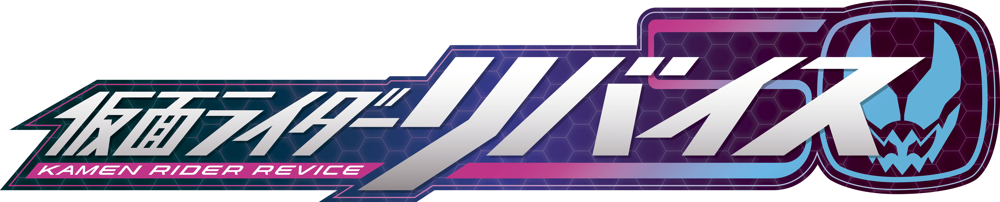
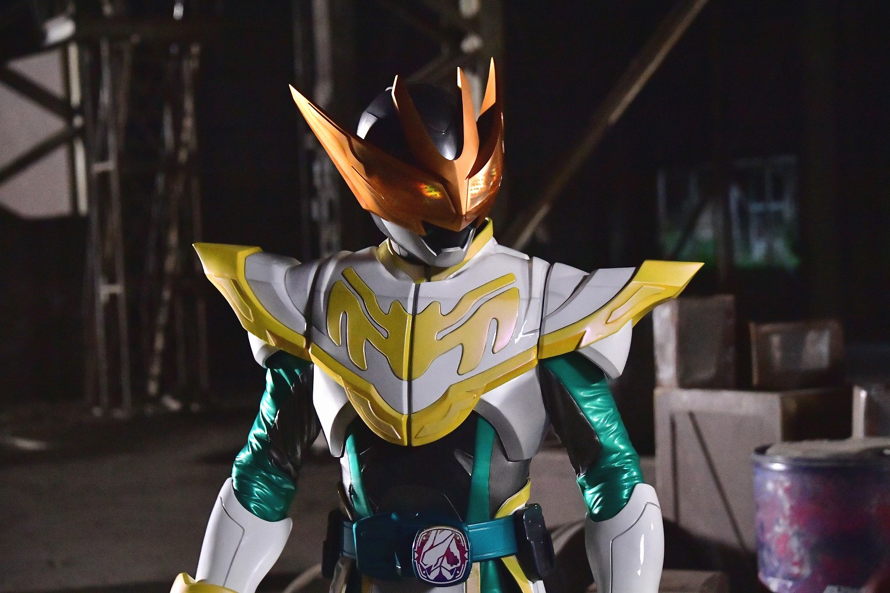
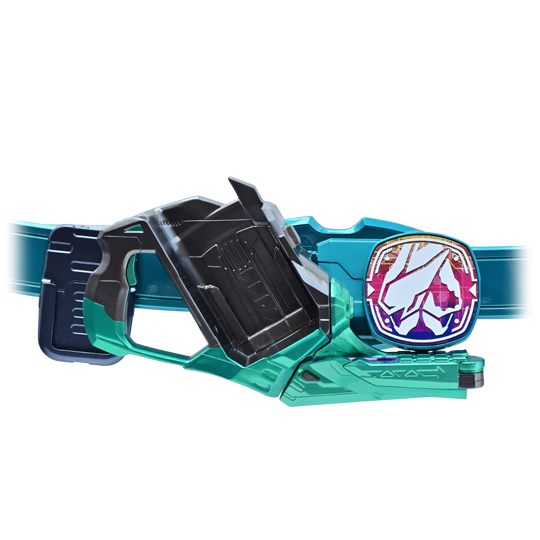
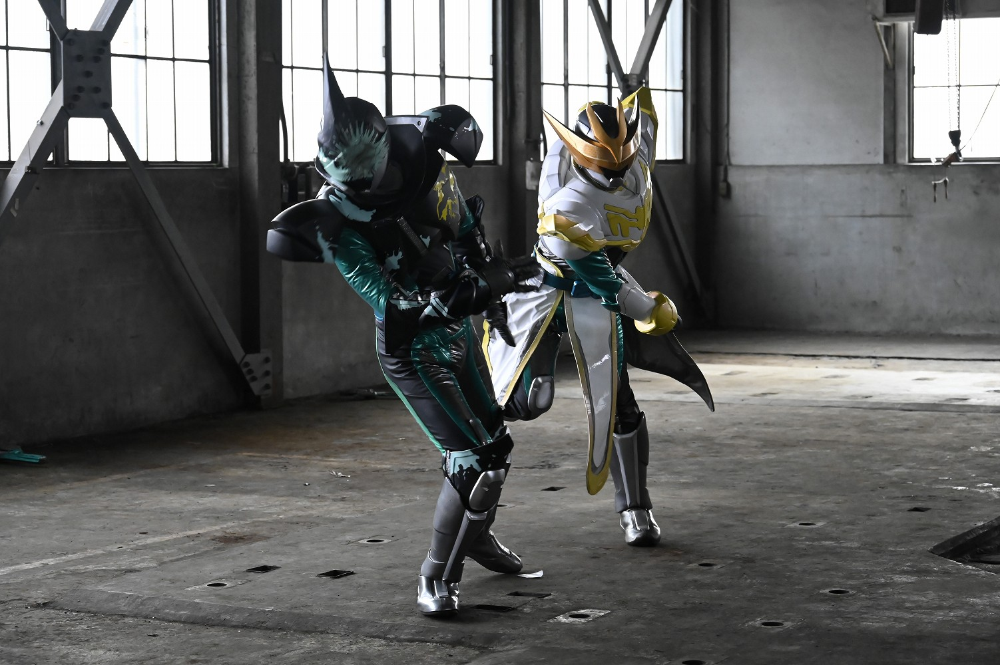
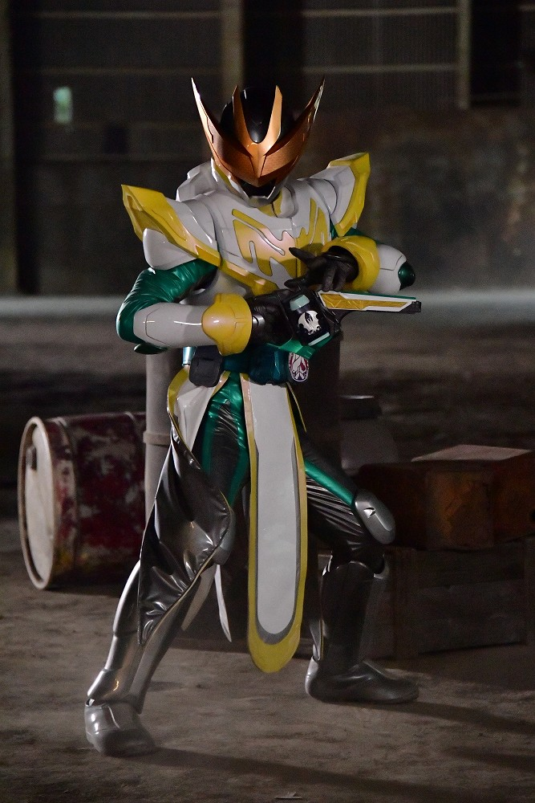
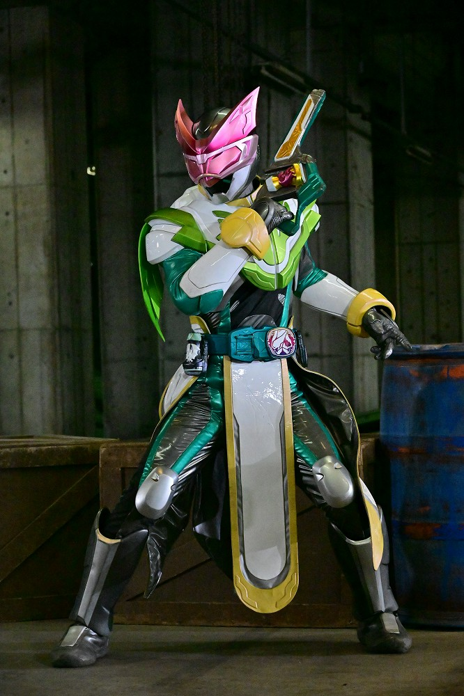
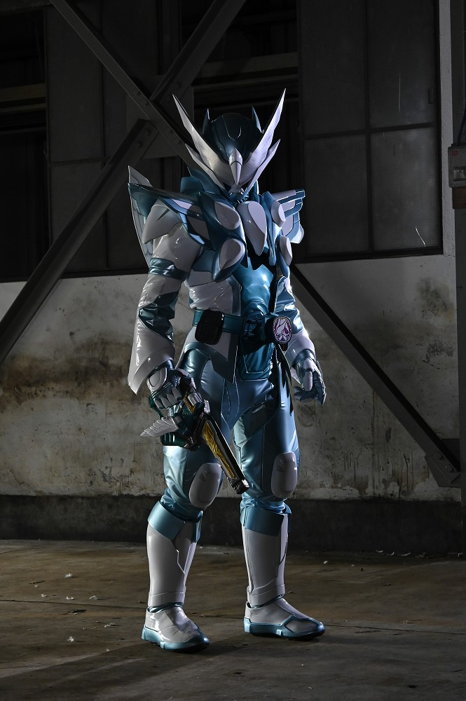
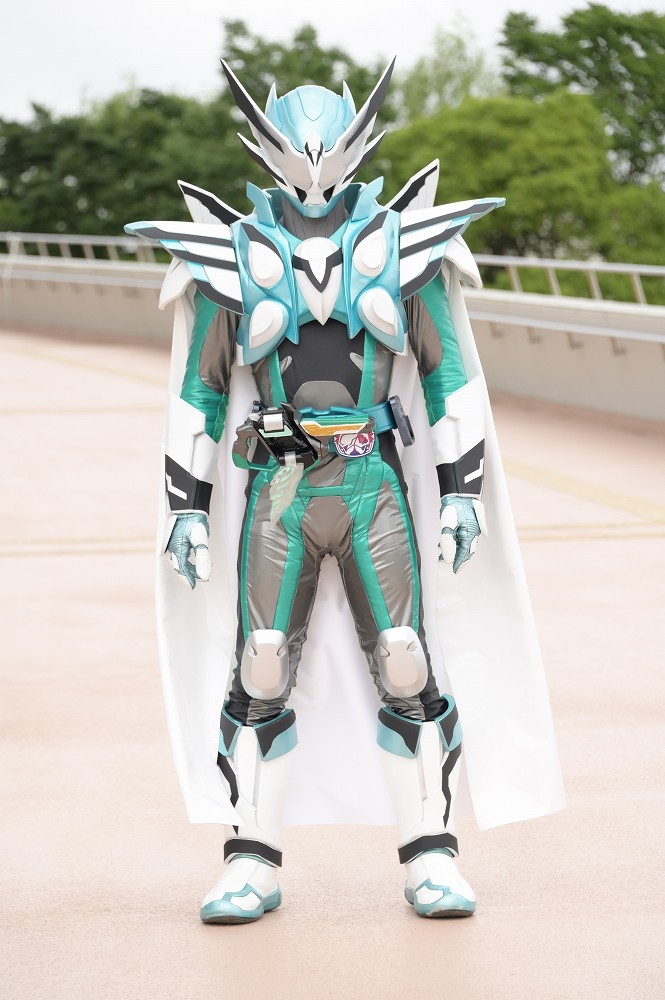
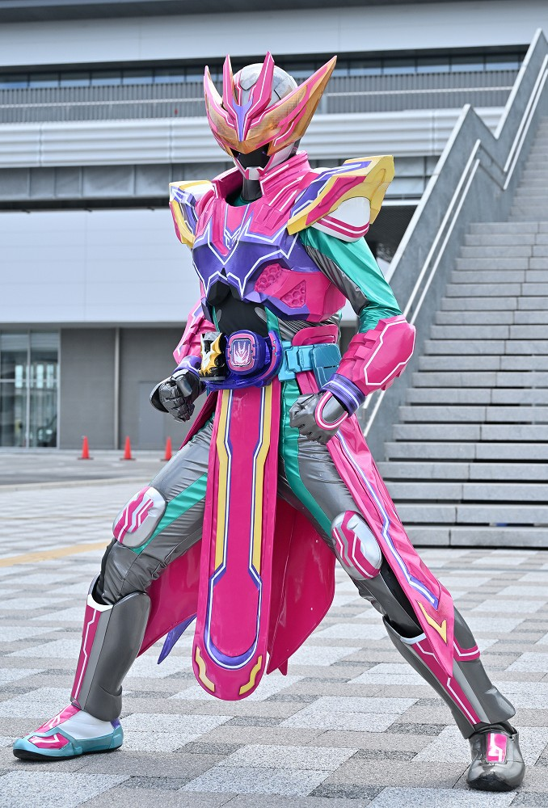

2021年から放送された「仮面ライダーリバイス」に登場する仮面ライダー
変身者は五十嵐大二。ツーサイドライバーとバイスタンプを使い変身する。
２つの変身形態があり、これはプラスエネルギーを増大した悪魔を介さない形態。
基本形態はバットゲノム
身長：195.7cm 体重：110.2kg パンチ力：20.5t キック力:48.6t ジャンプ力：ひと跳び42.8m 走力：100mを3.3秒程度

ツーサイドライバーにバイスタンプを押印し、セット。その後ツーサイドライバーの先端を上に展開し、
トリガーを引くことで変身する。
ツーサイドライバーの先端を下側にすることで仮面ライダーエビルに変身することも可能。

ツーサイドライバーはライブとエビルの２つの形態を持つ。
ライブはプラスエネルギーを増大した悪魔を介さない形態。
エビルはマイナスエネルギーを増大した悪魔を介して変身する形態。
どちらも変身者は同じであるが、戦闘スタイルが全く異なる。

バットゲノム
「バット」バイスタンプで変身
バットの遺伝子により、空中での戦闘が可能。
銃撃と華麗な動作を組み合わせた戦闘スタイルを得意とする。

ジャッカルゲノム
「ジャッカル」バイスタンプで変身
ジャッカルの遺伝子により、俊敏な戦闘が可能。
高い俊敏性と索敵能力を活かした戦闘を行う。

ホーリーライブ
「ホーリーウィング」バイスタンプを装着し、変身
自身の悪魔であるカゲロウを消滅させたことにより、
過剰なまでのプラスエネルギーを持っている。
戦闘力は高いものの、悪魔がいなくなったことで精神が不安定になり、
暴走していることが多かった。

エビリティライブ
「パーフェクトウィング」バイスタンプで変身
カゲロウが復活したことにより、自身の悪魔と一体化した形態。
プラスエネルギーとマイナスエネルギーを並行出力しており、
超常的な力を発揮する。

ライブマーベラス
「メガバット」バイスタンプとリバイスドライバーで変身
かつて使うことのできなかったドライバーで変身する。
仮面ライダーエビルマーベラスも同時に変身し、驚異的なコンビネーションを発揮する。
仮面ライダー一覧